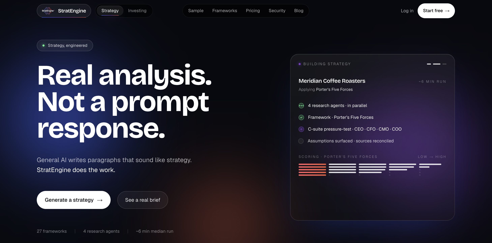
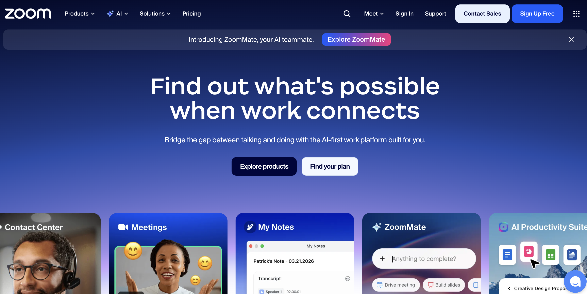
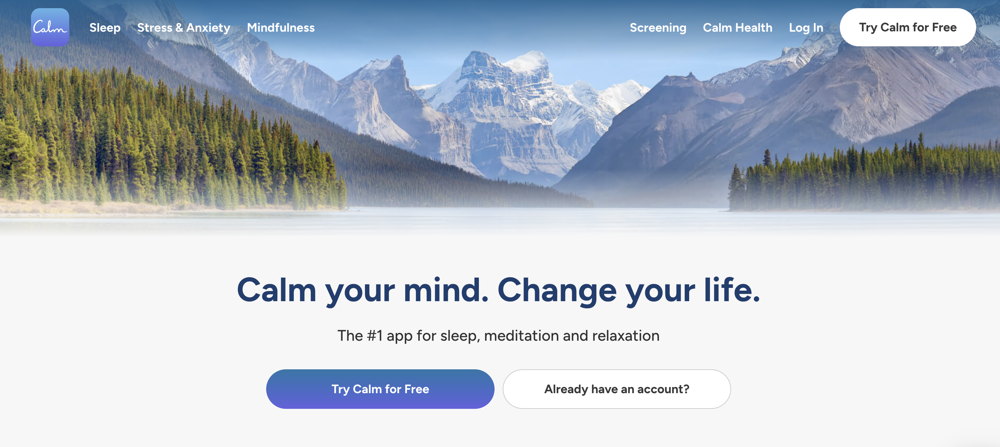

What I'm about to teach you will give you the skills to build whatever you want.
Building a real, live website on a real URL — by the end of class.
The four tools
- VS Code — where the files for your website live on your computer.
- Claude Code — the AI that edits those files for you.
- GitHub — the backup + history of every change.
- Vercel — turns your files into a live website on the internet.
What this class is not.
- Not a coding class. You will never type code. You will type English.
- Not a design class. The AI handles the visual craft.
- Not "how does AI work." We're using it, not dissecting it.
- Not about custom domains, databases, or logins (yet).
Out of scope today: the dual-site / LLM-bot routing system you may have heard about — that's class 2.
VS Code is just a really fancy file manager.
- Install VS Code (free, from code.visualstudio.com).
- Install the Claude Code extension from the VS Code extension marketplace.
- File → Open Folder — this is how you tell VS Code which project to work on. (The #1 stuck-point.)
- Permission prompts: when Claude asks to edit a file, choose "Allow" or "Allow always" — safe inside your project folder.
What the colors and letters mean.
VS Code uses git to show you what changed since your last save. Once you understand these, you always know the state of your project.
Letters
U = Untracked (new file, git doesn't know about it yet)
M = Modified (file changed since last commit)
Colors
Green = new file
Orange/Yellow = modified
In short: git is telling you "here's what's different since your last save."
Creating agents inside Claude Code.
An agent is just a specialist Claude calls when needed. Today we'll install two: code-reviewer security-reviewer
→ Open agent prompts (copy & paste)
Steps (we'll do this live)
- In VS Code, open the Claude Code terminal panel.
- Type
/agentsand hit enter. - Choose Create new agent.
- Choose Personal (available in all projects) vs Project (this repo only) — pick Personal.
- When prompted for the agent definition, paste the full markdown from the handout.
- Save. Confirm it appears in the
/agentslist. - Repeat for the second agent.
Now you know how to make your own agents for anything — a copywriter, a tax helper, whatever.
Make code-review and security-review automatic.
Update your global CLAUDE.md so Claude always runs both reviews after code changes — no need to remember.
You just gave Claude a permanent instruction. This is how you train it to your standards.
What CLAUDE.md is and how it works.
A plain markdown file Claude reads automatically every time it starts. Permanent instructions you don't have to repeat.
When making a decision, you need to decide where the direction belongs: global or project.
Global
~/.claude/CLAUDE.md
Applies to every project on your computer.
"Always run code-review after changes." "Be concise." Style preferences.
Project
./CLAUDE.md in repo root
Applies only to this website.
"This is a wedding photographer site." "Brand colors are X." "About page copy is locked."
Rule of thumb: same for every AI session → global. About this website → project.
To view or edit: just ask Claude — "open my global CLAUDE.md" or "open the project CLAUDE.md."
Note: these live in a .claude folder that's hidden by default — let Claude open them for you rather than hunting for the files.
GitHub: a project with memory, stored in the cloud.
- Sign up at github.com.
- Pick a username you'd put on a resume — you'll see it forever.
- You do not need to learn git commands. Claude handles commits and pushes.
The five words you need to know.
- Git = change tracking. Like Track Changes in Word, but for your whole project.
- Commit = save. A snapshot you can always roll back to.
- Push = send your saves up to GitHub. (This is what triggers a live deploy.)
- Pull = grab the latest version from GitHub down to your computer.
- Clone = make a fresh copy of a project from GitHub onto your computer.
We're skipping branching — not needed for a solo website.
Local = practice. Push = publish.
Local (your computer)
Every edit shows up the moment you save. Preview it in your browser anytime. Experiment, break things, undo, redo — nobody sees it.
Push (to GitHub)
The moment you push, Vercel rebuilds and the changes go live for the whole internet. Only push when you're ready.
This is the single most important concept of the day. Build locally. Push when proud.
Vercel: free hosting that auto-deploys when you push.
- Sign up at vercel.com — use the "Sign up with GitHub" button. One click, no separate password.
- You'll land on a dashboard — this is where every site you build lives.
- Hobby plan = free forever for personal projects like this.
- Every push to GitHub → Vercel rebuilds automatically. No buttons to click.
Get Claude, GitHub, and Vercel talking.
Ask Claude in the VS Code terminal:
Verification checklist
git statusworks in the VS Code terminal- Your project shows up at github.com/yourname
- Your project shows up in Vercel with a *.vercel.app URL
Put your name on the live internet.
Everyone does this together, live.
- In Claude Code, paste this prompt:
- Refresh your *.vercel.app URL in your browser. Wait ~60 seconds.
- See your name. Live. On the internet.
This is the moment it clicks. Now we make it beautiful.
Claude knows how to code. Impeccable knows how to make it look good.
- Without Impeccable: generic AI-looking pages.
- With Impeccable: distinctive, polished, professional craft.
- Install it → (impeccable.style/#downloads)
- Restart VS Code so the skill loads before you use it.
The single most important slide of the day.
Run /impeccable init to start. In the same message, paste in as much context as you can — these are blank repos with zero info about your business.
Include in your first message
- What the business does, who it's for
- Who you are, your story, your why
- The vibe — luxe, playful, technical, calm, bold, etc.
- Sites you love (URLs)
- Brand colors and fonts if you have them
Logo tip: drop your logo file into the root of the project tree before running — it gets picked up automatically.
Review and iterate from the outside in.
After every /impeccable pass, fight the urge to fix small things first. Lock each layer before moving down — otherwise you'll polish a button that's about to get deleted anyway.
You can use the iteration commands at every layer — /impeccable bolder, animate, delight, etc. all work whether you're fixing the whole-site aesthetic or just one section's layout. Full list on the next slide.
And: describe what's wrong — don't try to micro-direct the fix. "The CTA feels lost" beats "move the button 4px left."
The commands you'll use at every layer of the funnel.
/impeccable + <command> + whatever you want to work on/impeccable craft— the main iteration command. Use this to keep shaping any section after the initial init./impeccable bolder·/impeccable overdrive— when the design feels safe, push it louder. Overdrive really pushes it, but can be heavy on performance — use carefully./impeccable animate— add motion and micro-interactions that bring the page to life./impeccable delight— add small surprising details that make people screenshot and share.
Inverse if needed: ask for "quieter" or "calmer" if it goes too far.
→ Full command reference (impeccable.style/docs)
The loop: review (previous slide) → run an iteration command → review again → repeat until you love it.
Things will break. That's normal.
- Page blank? Ask Claude: "the page is blank, what's wrong?"
- Want to preview your site locally? Ask Claude: "launch a local server" — then open the URL it gives you in your browser.
- Preview won't update? Refresh the browser, then ask Claude to restart the server.
- Something broke and you want to undo? Ask Claude: "revert to the last commit."
When in doubt, describe what you see and what you expected. Claude will figure it out.
When stuck, paste one of these.
PREVIEW Preview won't load:
DEPLOY Vercel build failed:
UNDO I broke something:
STALE Claude keeps giving you outdated instructions or APIs that don't exist anymore:
Once layout + aesthetic are locked, here's the order.
→ Full Impeccable docs (impeccable.style/docs)
- 1. Craft the layout and visual feel with
/craft— use this for the initial site and for any new page you add later. - 2. Push further with
/bolder,/overdrive,/animate,/delightuntil you love it. - 3. Copy last — talk Claude through the copy directly (no special command). Don't waste good copy on a layout you're going to throw away.
- 4. Optimize + harden —
/impeccable optimizefor accessibility, performance, and code quality, then/impeccable hardento lock down security and resilience. - 5. Audit + critique —
/auditfor implementation quality, then/critiquefor design quality (optional if you're happy). Only after passing do you move to polish. - 6. Polish — always last, right before launch.
The pages almost every website needs.
Standard pages
- Home
- About — your story, your why
- Services / Products / What you do
- Contact — form or email
- FAQ
- Testimonials / Social proof
- Privacy Policy + Terms
Specialized — depends on your business
- Restaurant → Menu, Reservations, Hours
- Photographer → Portfolio, Pricing, Booking
- Consultant → Case Studies, Process, Book a Call
- Coach → Programs, Free Resources, Schedule
- SaaS → Features, Pricing, Docs, Changelog
- Local service → Service Area, Before/After, Reviews
Look at what competitors have. Their nav bar is your starting page list.
- Pick 3–5 competitors or businesses you admire in your space.
- Look at their navigation bars — those are the pages that work.
- Ask Claude:
Then for each page, the prompt is just:
Two things to do once your site is good enough to share.
Get a real domain.
yoursite.com instead of yoursite.vercel.app. ~$12/year.
Buy it inside Vercel: Project → Settings → Domains → "Buy a domain." Vercel handles the DNS setup automatically.
Set up a backup branch.
So you can save work-in-progress to GitHub without it going live.
Right now every push deploys. That was fine while you were building — nobody was looking. Once your site is live and shared, you need a way to back up changes without publishing them.
What's a branch? Think of it as a parallel copy of your project. Vercel only watches the main branch — push to main, it deploys. Push to any other branch, it just sits safely on GitHub. A backup branch is your "saved but not published" lane.
You don't need to memorize git commands — Claude does all the branch switching. Just say:
The next class, if you want it.
- Add analytics so you know who's visiting.
- Add a real contact form that emails you when filled out.
- The dual-site / LLM-bot routing system — your website optimized separately for humans and for AI search engines (ChatGPT, Perplexity, Claude).
Now go build something.
Then come back when you're ready to think about what's next for your business.
Let's connect on LinkedIn.
Send a connect request — happy to keep helping as you build.

You just shipped a website. Now what?
Building it was step one. Growing it — knowing what to do next, where to focus, how to find customers — is the harder part.
I built StratEngine to help with exactly that: a tool that thinks through business and growth strategy with you, the way a co-founder would.
→ Ask me about it.